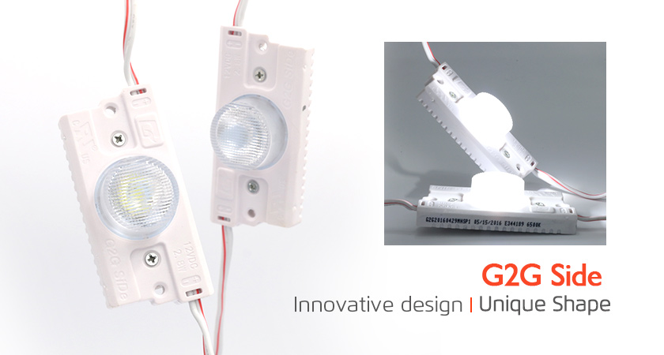
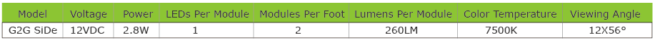
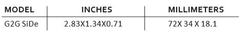
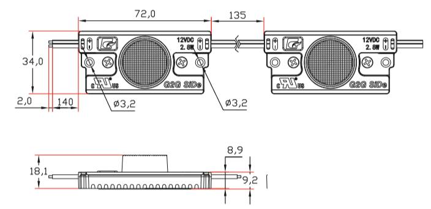

<div class="product-details margit-top110">
	<div class="container">
		<div>
			
		</div>
		<div class="row bottom-line">
			<div class="col-xs-12 col-sm-7 col-md-7">
				<p>
					Uniquely engineered for shallow or narrow sign cabinets, G2G's SiDe optic lenses optimize light from the edge to the center, delivering bright and even illumination in a revolutionary way.
					For application of both single and double-sided cabinets. Installation options include 3M VHB double-sided tape and mechanical mounting.
				</p>
			</div>
			<div class="col-xs-12 col-sm-5 col-md-5">
				<a class="download_layout"  href="download_files/SiDe.pdf" target="_blank">Download The Product Catalog</a>
			</div>
		</div>
		<div class="row product-features">
			<h3 class="specification">LED MODULES FEATURES</h3>
			<p>
				• Designed for deep sign boxes
				<br> • Even illumination for double-sided sign boxes
				<br> • Single-face modules
				<br> • 12 VDC Constant Current Technology (CCT)
				<br> • UL and cUL Recognized
				<br> • 3M VHB double-sided tape and mechanical mounting included
			</p>

		</div>

		<h3 class="specification">LED MODULES SPECIFICATIONS</h3>
		<div>
			
		</div>
		<h3 class="specification">LED MODULES DIMENSIONS</h3>
		<div>
			
		</div>
		<div>
			
		</div>

	</div>
</div>